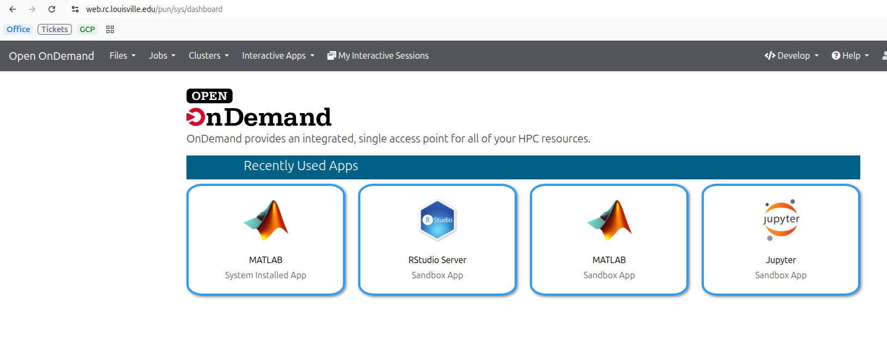

Open OnDemand
Open OnDemand provides a web-based graphical interface for the Zurada HPC system. It allows you to manage files, open terminal sessions, submit Slurm jobs, and run interactive applications like Jupyter and RStudio directly in your browser—no command-line setup required.
1. Prerequisites & Access Requirements
Prerequisites
An active HPC Zurada account.
A connection to the UofL network or the *UofL Global Protect VPN (if off-campus).
Step 1: Access Open OnDemand
Open your browser and navigate to the Open OnDemand portal at https://web.rc.louisville.edu
{kind=link}

Figure 1: Open OnDemand authentication screen.
3. Interactive Applications Guide
Interactive apps run on dedicated compute nodes allocated to your account by Slurm.
Tip
Submit reasonable walltimes and core counts. Smaller resource requests schedule significantly faster in the Slurm queue than large requests.
4. Using Custom Conda Environments
To use custom Python environments inside VS Code or Jupyter:
Open Clusters > >_ Zurada Shell Access and create your environment:
module load miniforge3
conda create --prefix /work/$USER/my_env python=3.10 ipykernel -y
conda activate my_env
python -m ipykernel install --user --name my_env --display-name "Python (my_env)"
When launching Jupyter or VS Code in Open OnDemand, your new environment kernel “Python (my_env)” will appear automatically in the environment selector dropdown.
5. Slurm Job Management
Job Composer (Batch Scripts)
If you do not need a GUI desktop and want to run non-interactive batch scripts:
Navigate to Jobs > Job Composer.
Click New Job > From Specified Template or From Default Template.
Edit your Slurm batch script directly in the built-in editor:
#!/bin/bash
#SBATCH --job-name=demo_job
#SBATCH --output=demo_%j.out
#SBATCH --nodes=1
#SBATCH --ntasks=1
#SBATCH --cpus-per-task=4
#SBATCH --time=01:00:00
#SBATCH --mem=8G
module load matlab
matlab -nodisplay -nosplash -r "my_script; exit;"
Click Submit to dispatch the script to the Slurm queue.
Active Jobs (Queue Monitor)
Go to Jobs > Active Jobs.
View all queued, running, or held jobs across the cluster.
Filter by User (
$USER) to monitor your personal jobs or inspect job IDs, start times, and allocated nodes.
6. File Management & Terminal Access
Browser File Explorer
Navigate to Files > Home Directory or Work Directory.
Drag and drop files from your computer to upload.
Select text scripts or configuration files and click Edit to open the built-in web code editor.
In-Browser SSH Terminal
Navigate to Clusters > >_ Zurada Shell Access.
An SSH shell session opens directly on the Zurada login node. You will need to perform a DUO push verification
# Monitor your submitted jobs
squeue -u $USER
# Check scratch storage usage
df -h /work/$USER
7. Troubleshooting & FAQs
- Q. When I click Connect I see Failed to connect to something like cpusm75:33382
Cause: Your node is not quite setup for the interactive application
Fix: Do not restart the session, wait for about 30s to a minute and try pressing connect again.
- Q: My session stays in the “Queued” state for a long time.
Cause: Requested CPU or walltime limits exceed current free node capacity.
Fix: Go to My Interactive Sessions, click Delete, and resubmit with fewer cores, less RAM, or shorter walltime.
- Q: App crashed or disconnected automatically.
Cause: Job exceeded the requested Walltime limit.
Fix: Re-launch the session with longer runtime.
- Q: “Bad Gateway” or “404 Not Found” error upon launch.
Cause: The compute node instance died unexpectedly or did not start the web service in time.
Fix: Delete the failed session under My Interactive Sessions, refresh your browser, and launch a fresh session.
Note
These guides assume you have a valid account and have requested access to Zurada.
Replace any example hostnames or project names with values provided by Research Computing.